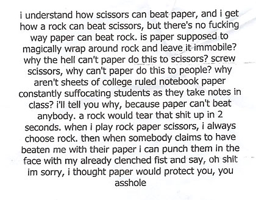
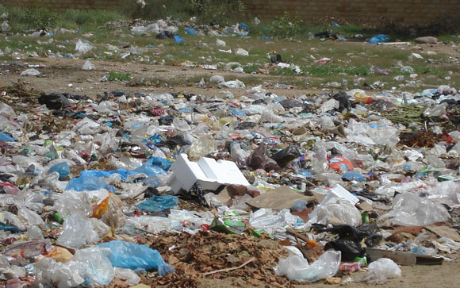

Is it all my fault that their relationship ended? Am I a home wrecker? If he left a house and eight years for me, what would it take for him to want to move on and leave me later?


Nerdiest yet best halftime show ever
|
Berkeley sure knows how to put on a show. At halftime at their November 3 game against Washington State, they performed a tribute to our favorite video games. Playing the music would have been cool enough, but no — they act out the game itself!
Be forewarned — the show appears upside-down because the band performed to the other side of the stadium. And watch closely for the little Mario, Pikachu, and Link running around.
Rock, lame, scissors
|

photo / Found Magazine
Rock, paper, scissors will never be the same for me again. But I’m grateful for the enlightenment.
Check out Found Magazine
Take a look at the Capital MetroRail car
|
Flickr user C Dozo snapped some great photos of the Austin Light Rail Capital MetroRail car at the Capital Metro building yesterday. View her photo set here.
Save the Earth tomorrow at H-E-B
|

photo / zainub
Going green is so hot right now.
Tomorrow, from 10am to 7pm, Austin-area H-E-B stores are celebrating Texas Recycles Day. If you bring in five plastic grocery bags, they’ll give you one reusable shopping bag for free. Bring in 10 plastic bags and get another reusable bag for free. You can bring in as many plastic bags as you want, but they’ll only give you two reusable bags back.


{kind=link}
Recent comments